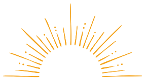

Quem Somos
Um novo olhar para a sustentabilidade, viabilidade ambiental e sucesso dos empreendimentos
A Aurora Ambiental nasceu com o propósito de oferecer assessoria e consultoria ambiental especializada, com o compromisso de tornar empreendimentos viáveis, sustentáveis e responsáveis, atendendo às exigências legais e contribuindo para a preservação ambiental.
O nome Aurora reflete um novo amanhecer, um novo ciclo de possibilidades, onde acreditamos que cada projeto pode nascer alinhado às boas práticas ambientais, respeitando o meio ambiente e promovendo um futuro mais equilibrado.

Aurora Ambiental: um novo amanhecer para negócios sustentáveis.